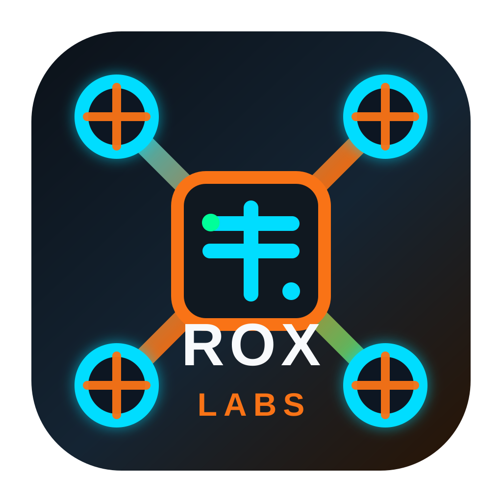
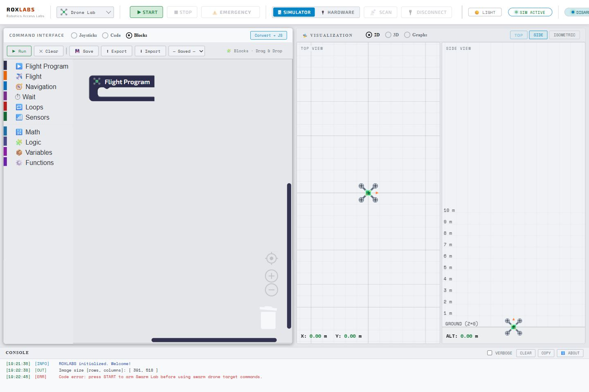
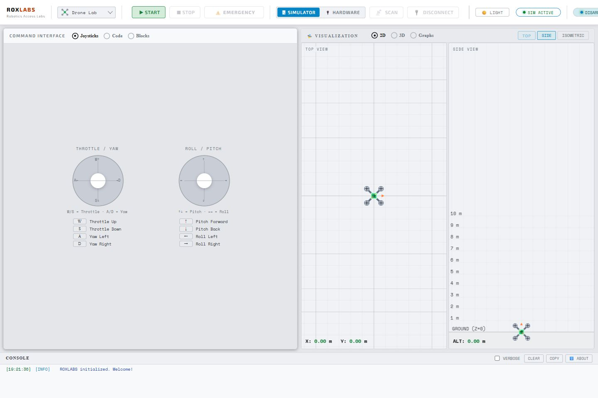
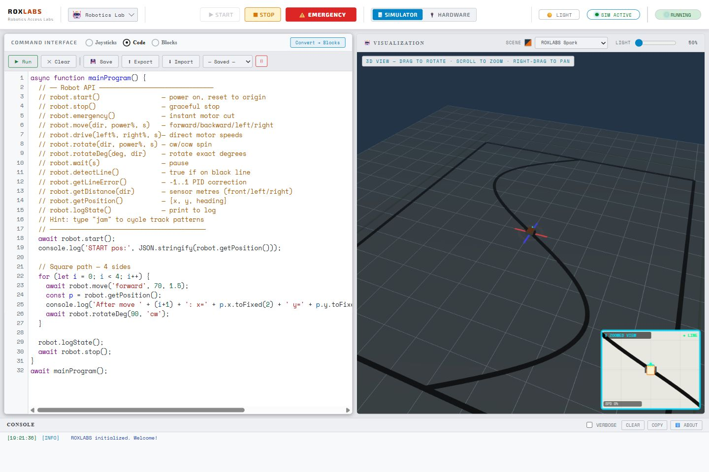
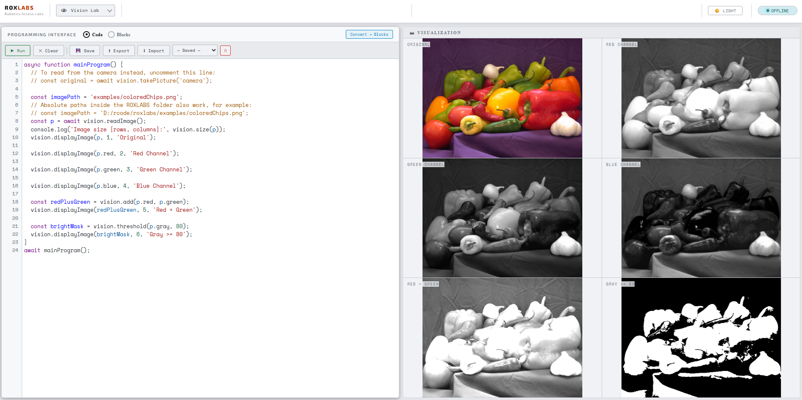
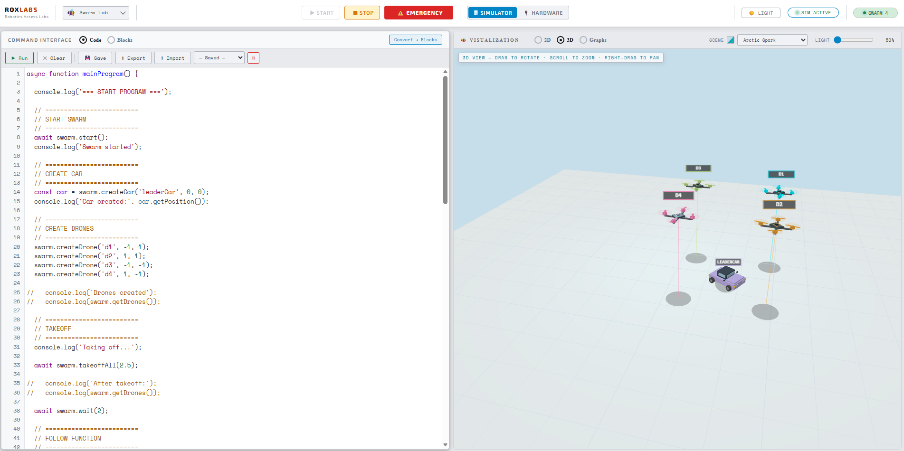
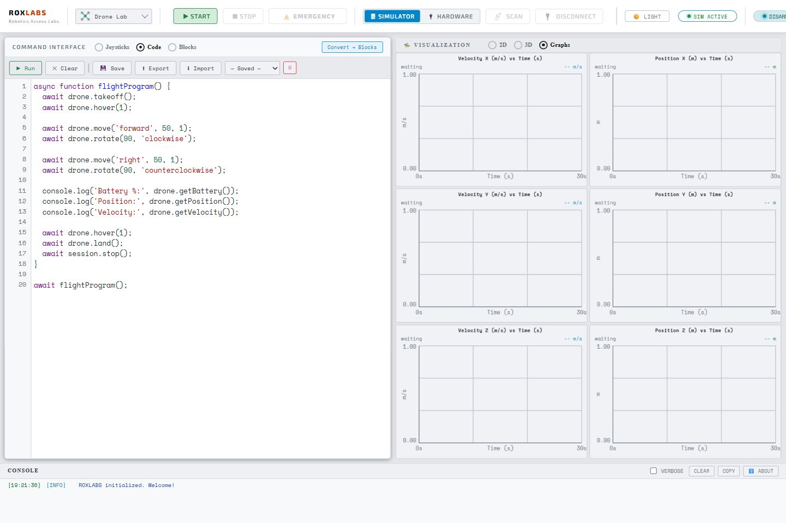

Blocks + JavaScript
Students can begin with Blocks and move toward readable JavaScript using the same robotics ideas.

ROXLABS Robotics Access LabsMaking Robotics Education Accessible
Learn robotics through a complete design, build, test, and deploy workflow—from Block based coding to JavaScript, simulation to hardware, and commands to real-time telemetry.
Mission
ROXLABS is built for classrooms, outreach programs, and robotics clubs that need a practical way to teach real programming concepts. Students can experiment, make mistakes, and iterate safely in simulation before interacting with physical hardware. This reduces risk, lowers equipment costs, and builds confidence before deployment in the real world.
The platform is designed for low-connectivity environments: the desktop release can run offline, licenses can be imported locally, and lessons can be delivered without depending on a hosted service.
Platform features
From beginner-friendly programming to simulation, telemetry, and hardware deployment, ROXLABS provides a complete robotics learning environment.
Students can begin with Blocks and move toward readable JavaScript using the same robotics ideas.
Motion, state, position, and errors are visible before students touch hardware.
Supported drone activities can move from safe simulator practice to Web Bluetooth hardware sessions.
Graphs and state readouts help students connect code changes to measurable behavior.
Labs
ROXLABS provides a unified environment for teaching drones, mobile robotics, computer vision, and swarm intelligence.
Program takeoff, landing, movement, rotation, telemetry, graphs, and 3D visualization before moving to supported BLE drone hardware.
Explore ground robot motion, turns, sensor-style feedback, path following, and classroom-friendly simulation.
Teach fundamentals of image processing using readable functions for channels, filters, thresholds, transforms, and matrix operations.
Create multiple drones, robots, and toy cars to demonstrate coordination, following, formations, and agent behavior.

Learning workflow
Media kit
A gallery of the ROXLABS ecosystem, where learners design autonomous robots, pilot virtual drones, train computer vision systems, and coordinate intelligent swarms. Then bring all of it to life on real hardware!







For educators and outreach teams
ROXLABS helps educators, outreach programs, and robotics clubs deliver engaging robotics experiences without the traditional barriers of cost, hardware availability, or safety concerns. Learners can experiment freely in simulation, build confidence through hands-on exploration, and transition seamlessly to real drones, robots, and vision systems using the same tools and workflows.